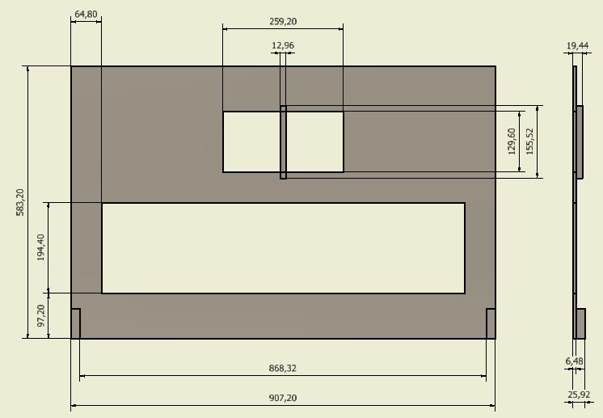

Descripción del Proyecto
El desarrollo del proyecto es propuesto por estudiantes de Ingeniería Mecatrónica de la Universidad Nacional de Colombia sede Bogotá y se realiza como actividad propuesta por la asignatura de Robótica ofertada por el Departamento de Ingeniería Mecánica y Mecatrónica. El objetivo del proyecto es diseñar y simular una celda robótica que sea capáz de cumplir con tareas báscias en el proceso de tratamiento de plásticos haciendo uso de las herramientas de diseño de celdas robotizadas estudiadas en el curso como RobotStudio. Para llevar a cabo dicho proceso se realiza un proceso de selección de robots, efector final y se hace uso de un modelado de maquina de inyección. El resultado final es la simulación del procedimiento de tratamiento de plásticos haciendo uso de dos robots en donde se evidencian todos los procesos aplicados a la pieza.
Especificaciones
- Modelo de la maquina de inyección
- - Se hace uso de un modelo de de maquina de inyección que se ajusta al montaje, el recurso ha sido obtenido de GrabCad.
- Piezas
- Las especificaciones de la pieza manipulada por el robot de taladrado y corte:
- - Peso: 25 Kg
- - Dimensiones en centimetros: 
- Las especificaciones de la pieza manipulada por el robot de de inserción de casquillos:
- - Peso: 100 g
- - Dimensiones en centimetros:
- Operaciones
- - Tomar la pieza con el efector final.
- - Mover la pieza a la sección de corte posición 1.
- - Realizar corte 1 con pinzas.
- - Mover la pieza a la sección de corte posición 2.
- - Realizar corte 2 con pinzas.
- - Mover la pieza a la sección de despedicio.
- - Soltar desperdicio resultante del corte.
- - Mover la pieza a sección de fresado posición 1.
- - Realizar fresado 1 a la pieza.
- - Mover la pieza a sección de fresado posición 2.
- - Realizar fresado 2 a la pieza.
- - Mover la pieza a sección de descanso.
- - Tomar casquillos
- - Mover casquillos a la pieza principal.
- - Insertar casquillos en la pieza principal.